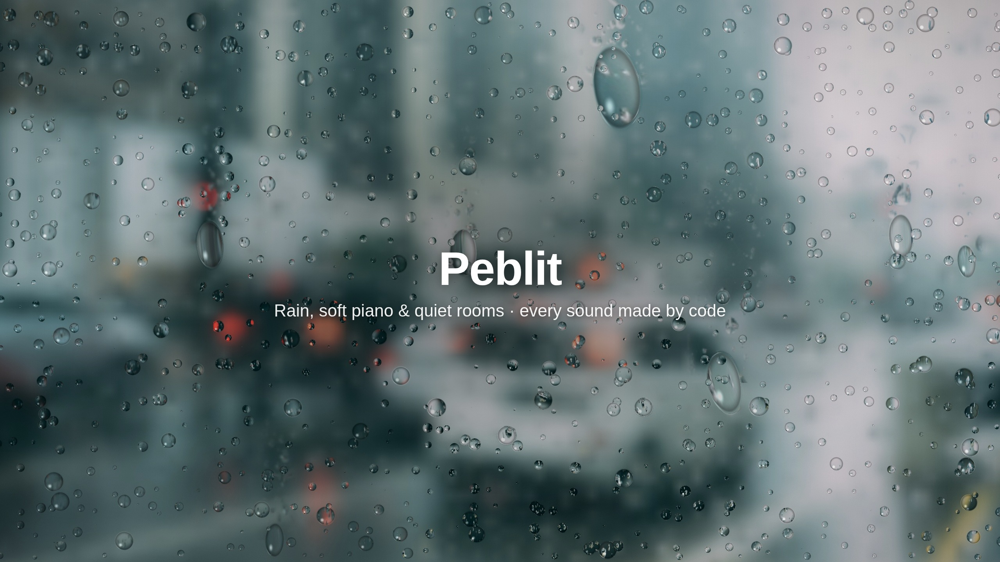
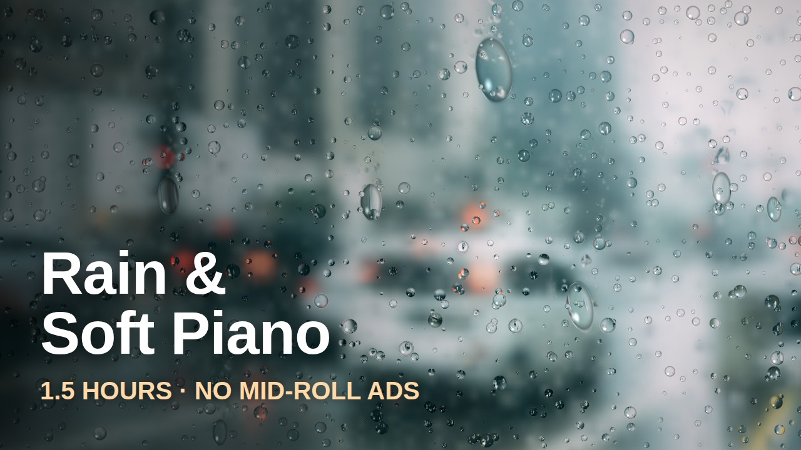

PC 에서 하는 걸 추천합니다(영상이 1GB). 회색 칸은 오른쪽 버튼으로 복사해서 그대로 붙여 넣으면 됩니다.
Peblit is a quiet place to rest your mind: long, calm videos for sleep, study, reading and work. Rain on the window, soft piano, cozy cafes. Every sound you hear is played live by a generative music system we designed. Nothing is looped and there is no stock music, so every video is a brand-new piece. Each video shows its seed number, so you can always come back to the exact same piece. No mid-roll ads, ever. Close your eyes and stay as long as you like.

Rain on the Window & Soft Piano | 1.5 Hours Relaxing Music for Sleep & Study | No Mid-Roll Ads
Soft rain on the window and a gentle piano that never repeats. 1.5 hours of calm for sleep, study, reading, work or just slowing down. No mid-roll ads. Every note and every raindrop sound is played live by our own generative music system. Nothing is looped and nothing is stock music. The piano follows slow, drifting chords in D Lydian over a warm pad, and the music moves to a new section every few minutes. Seed #1042. Every seed is a different piece. This one is yours to come back to. How to listen • Sleep: lower the volume and let it run. • Study and work: put it on in the background, it stays out of the way. • Reading: the rain keeps the room quiet around you. Photo: Kaique Rocha (CC0) via Wikimedia Commons. Raindrops on the glass are rendered live by code. #rainsounds #relaxingmusic #pianomusic #sleepmusic #studymusic
rain sounds, rain and piano, relaxing piano music, sleep music, study music, rain on window, rainy day music, calm piano, ambient music, reading music, no mid roll ads, peaceful music, soft piano, rain ambience, focus music

올린 뒤 영상 주소를 세션에 알려 주면, 조회·시청 시간 기록을 시작합니다. 수익 조건(구독 1,000 + 시청 4,000시간)까지는 몇 달 걸리는 게 보통입니다.